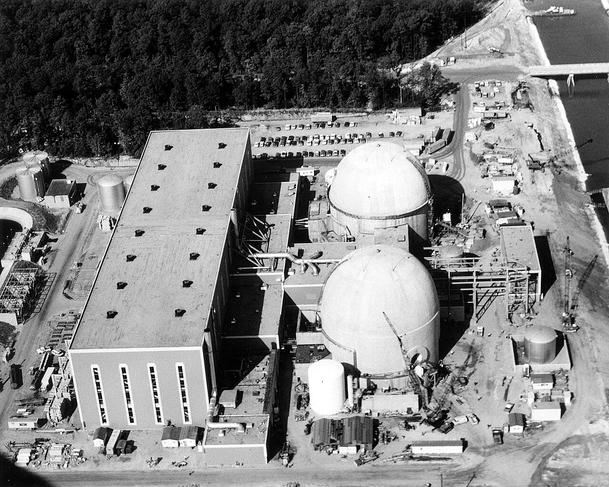
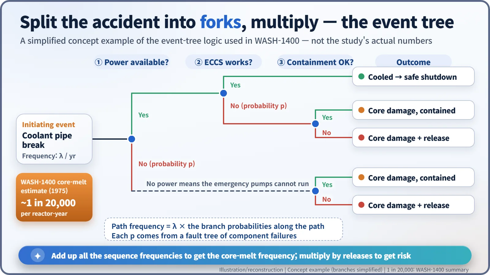
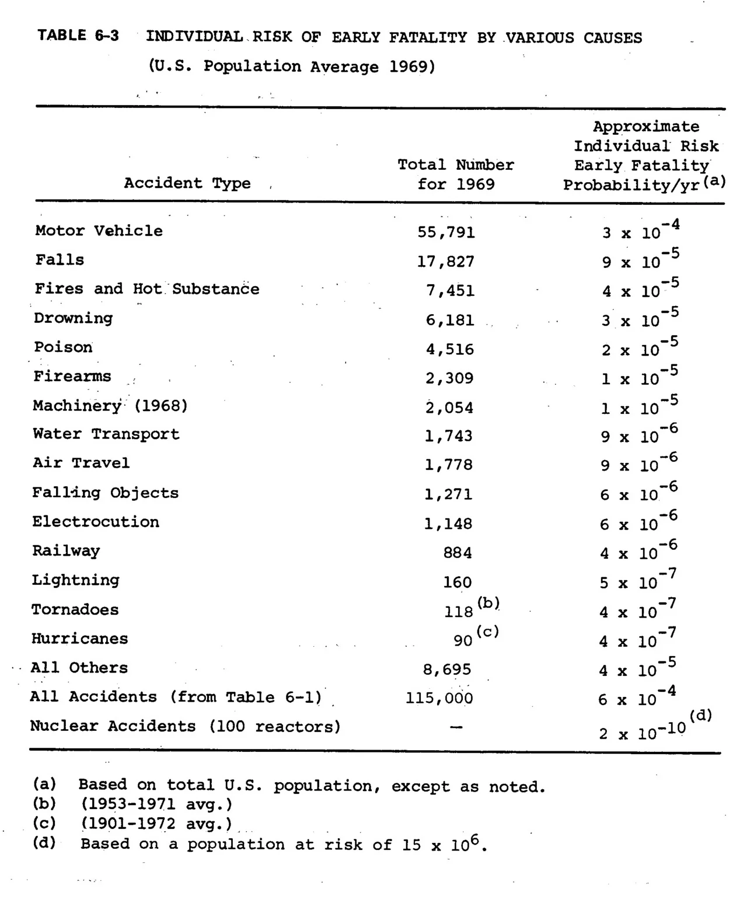
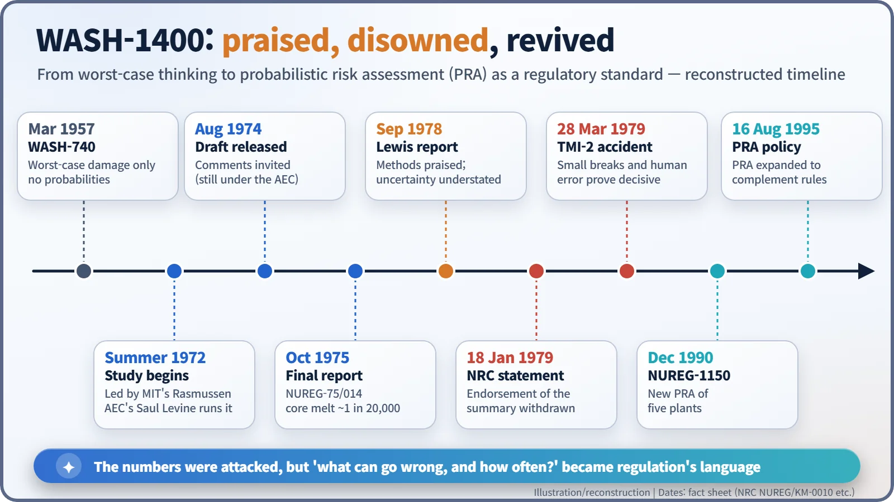

Nuclear History · 238
Four of a Kind, Twice in a Row? — WASH-1400, the Rasmussen Report That Measured Reactor Accidents in Probabilities (1975)
A study that put the chance of a core melt at about 1 in 20,000 per reactor-year was praised for its method, disowned for its summary, and then proved right about where to look.
In 1972 the US Atomic Energy Commission asked MIT's Norman Rasmussen to estimate how often a reactor accident might happen, not just how bad it could be. The resulting Reactor Safety Study, WASH-1400 (1975), put the chance of a core melt at about 1 in 20,000 per reactor-year and pioneered probabilistic risk assessment. Its executive summary was disowned by the NRC in January 1979, yet its methods became the everyday language of nuclear safety regulation.
Four of a kind, twice in a row
The chance of a major reactor accident, the comparison went, was about the same as being dealt four of a kind in draw poker twice in a row. That, in substance, is how Dixy Lee Ray, chair of the US Atomic Energy Commission (AEC), put the first estimates of a new study to Congress in 1974. It was the kind of comparison that sticks in the mind. And comparisons that stick in the mind would, a few years later, cause that study the most trouble. This is the story of the Reactor Safety Study, better known by its dry report number: WASH-1400. [2]
When safety meant "the worst case"
In the 1950s and 1960s, reactor safety was judged mainly in a deterministic way. Engineers picked serious but credible failures, such as a large coolant pipe breaking, called them "design-basis accidents", and made sure the plant could cope with them. What nobody could answer was the obvious follow-up: how often might things actually go badly wrong? A 1957 AEC study had calculated the damage from a worst-case accident but could offer no real probabilities, and some experts it consulted reportedly refused to give a number at all. [2]
Meanwhile, the aerospace world had been developing the fault tree. You take one big failure and break it down into combinations of small ones ("the pump stops, or the valve fails to open, or the power is lost"), then calculate the probability of the whole from its parts.
An MIT professor, two power plants
In the summer of 1972 the AEC asked Norman Carl Rasmussen (1927–2003), a nuclear engineering professor at MIT, to direct a new study. Day-to-day work was run by the AEC's Saul Levine. According to the report's own summary, about 80 people worked on it over three years. [1] [4]
Rather than survey every American reactor, the team took two apart in detail: Surry Unit 1 in Virginia, a pressurised water reactor of 788 MWe, and Peach Bottom Unit 2 in Pennsylvania, a boiling water reactor of 1,065 MWe. Each was the largest plant of its type about to start up. [1]

Multiply at every fork in the road
The central tool was the event tree. Start from an initiating event, such as a pipe break, then walk through a series of forks: Is electrical power available? Did the emergency core cooling system (ECCS) work? Did the containment building hold? Multiply the probabilities along each path and you get the frequency of that accident sequence; the failure probability at each fork comes from a fault tree. The team then added how radioactive material would spread and how people would be evacuated, to get frequency × consequence, in other words risk. It was the first full-scale use on nuclear plants of what we now call probabilistic risk assessment (PRA). [2]

A draft appeared in August 1974 and the final report (NUREG-75/014) in October 1975, published by the newly created Nuclear Regulatory Commission (NRC). Its headline: the chance of a core melt was about 1 in 20,000 per reactor per year. With 100 reactors running, the chance of one such accident in a given year would be about 1 in 200. [1]
Reactors next to meteors
The trouble lay in how the executive summary framed the results. It said that for 100 reactors the chance of an accident killing 1,000 or more people was about one in a million per year, and that this "coincides with the probability that a meteor would strike a U.S. population center and cause 1000 fatalities." Its table of individual risks put reactor accidents at 1 in 5,000,000,000 per year (for 100 plants), next to motor vehicles at 1 in 4,000 and lightning at 1 in 2,000,000. [1]

The report did state that it "has made no judgment on the acceptability of nuclear risks", leaving that to a broader segment of society. But numbers travel on their own. The Union of Concerned Scientists (UCS) published a critique, and in 1977 Representative Morris Udall, chair of the House Interior Committee, said there was a "widespread belief" that the report gave "a misleading impression of the certainty and comprehensiveness of its conclusions", and asked for a fresh look. [1] [2]
Praised and disowned at the same time
The NRC asked physicist Harold W. Lewis (1923–2011) of the University of California, Santa Barbara, to lead a review group. Its report, published in September 1978, was a curious mix. It said WASH-1400 "was largely successful" in making the study of reactor safety more rational and in mapping the topology of many accident sequences. But it concluded that the uncertainties in the probability estimates were "greatly understated", that the executive summary claimed more than the main report could support, and that earthquakes, fires and human error had not been handled adequately. [2]
On 18 January 1979 the NRC withdrew its endorsement of the executive summary and warned that the absolute risk figures should not be used uncritically. People often say the report was "withdrawn", but strictly it was the summary that lost the NRC's backing; the commission still recognised the value of the method. As NRC historian Thomas Wellock later put it: "PRA was dead. For two months." [2] [3]
Two months later: Three Mile Island
On 28 March 1979, part of the core of Three Mile Island Unit 2 melted. It was not a giant pipe rupture but a small loss-of-coolant accident, coolant escaping through a relief valve that stuck open, combined with operators misreading the situation. Those were precisely the two things WASH-1400 had flagged as potentially more important than the large break. It did not predict the exact sequence, but it had pointed to where to look. [2]
PRA came back. NUREG-1150, a new analysis of five US plants, followed in December 1990, and on 16 August 1995 the NRC announced that it would use PRA more widely, to complement its deterministic rules and defence-in-depth. The 1975 numbers were attacked, but the questions behind them (what can go wrong, how likely is it, and what are the consequences?) have become the everyday language of nuclear safety regulation. [2]
